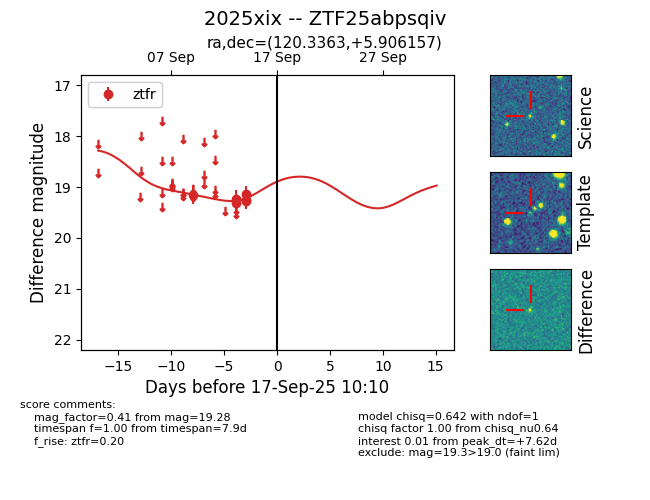

FINK: ZTF25abpsqiv
Lasair: ZTF25abpsqiv
ALeRCE: ZTF25abpsqiv
TNS: 2025xix
YSE: 2025xix
ZTF25abpsqiv (ztf,fink)
2025xix (tns,yse)
equatorial (ra, dec) = (120.3363,+5.90616)
galactic (l, b) = (215.6254,+18.22700)

last ztfr=19.28
6 ztfr detections